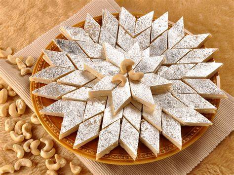
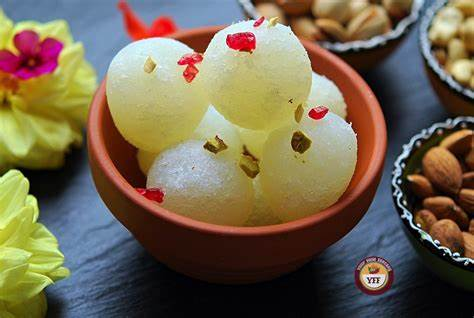

Gulab Jamun
Ingredients
- 1 cup sugar
- 1 cup water
- 3-4 green cardamom pods, crushed
- A few strands of saffron (optional)
- 1 teaspoon rose water or a few drops of rose essence
Recipe
- Start by preparing the sugar syrup (gulab). In a saucepan, combine sugar, water, crushed cardamom pods, and saffron (if using). Place it over medium heat and stir until the sugar dissolves completely.
- Once the sugar has dissolved, let the syrup come to a gentle boil. Then, reduce the heat and let it simmer for about 5-7 minutes until it slightly thickens. Stir occasionally. Once done, turn off the heat and add rose water or rose essence. Set aside to cool.
- Now, let's prepare the Gulab Jamun dough. In a mixing bowl, combine milk powder, all-purpose flour, and baking soda. Mix well.
- Add ghee or unsalted butter to the dry ingredients and mix using your fingers until the mixture resembles breadcrumbs.
- Gradually add milk, little by little, and knead the mixture into a soft dough. Be careful not to over-knead. If the dough feels dry, add a little more milk. Cover the dough and let it rest for about 10-15 minutes.
- After resting, divide the dough into small equal-sized portions and roll them into smooth balls. Make sure there are no cracks on the surface of the balls.
- Heat oil or ghee in a deep frying pan over medium-low heat. Once the oil is hot, carefully add the rolled Gulab Jamun balls in batches. Fry them on low to medium- low heat, stirring gently and continuously, until they turn golden brown and evenly cooked from all sides. It usually takes about 8-10 minutes. Make sure to fry them on low heat to ensure they cook through without burning.
- Once the Gulab Jamun balls are golden brown, use a slotted spoon to remove them from the oil and drain excess oil by placing them on a plate lined with paper towels.
- Reheat the sugar syrup (gulab) if needed until warm. Then, gently drop the fried Gulab Jamun balls into the warm syrup. Let them soak in the syrup for at least 1-2 hours to absorb the flavors and become soft and juicy.
- Once soaked, Gulab Jamun is ready to be served! You can serve them warm or at room temperature. Enjoy this delicious Indian dessert on its own or with a scoop of vanilla ice cream for an extra treat.

Barafi
Ingredients
- 2 cups full-fat milk powder
- 1/4 cup ghee (clarified butter), plus extra for greasing
- 1/4 cup milk
- 1/2 teaspoon cardamom powder
- A pinch of saffron strands (optional)
- Chopped nuts like almonds, cashews, or pistachios for garnish (optional)
Recipe
- Grease a square or rectangular pan with ghee and set it aside. This will be used to set the Barfi.
- In a heavy-bottomed pan, heat 1/4 cup of ghee over medium heat.
- Once the ghee is melted and hot, add the milk powder to the pan. Stir continuously to roast the milk powder until it turns light golden brown. This step adds flavor to the Barfi.
- Once the milk powder is roasted, reduce the heat to low and add the condensed milk to the pan. Mix well to combine.
- Gradually add the milk while stirring continuously to prevent any lumps from forming. This will help in achieving a smooth texture.
- Continue to cook the mixture over low heat, stirring constantly to avoid burning. The mixture will start to thicken and come together.
- Add the cardamom powder and saffron strands (if using) to the mixture and mix well. These ingredients will enhance the flavor of the Barfi.
- Keep stirring and cooking the mixture until it starts to leave the sides of the pan and forms a thick dough-like consistency. This may take around 8-10 minutes.
- Once the mixture reaches the desired consistency, remove the pan from the heat.
- Immediately transfer the mixture to the greased pan and spread it evenly using a spatula or the back of a spoon. Smooth out the surface of the Barfi.
- Sprinkle chopped nuts over the top of the Barfi for garnish, gently pressing them into the surface.
- Allow the Barfi to cool completely at room temperature. Once cooled, cover the pan with plastic wrap or foil and refrigerate for a few hours or overnight to set.
- Once set, remove the Barfi from the pan and cut it into desired shapes, such as squares or diamonds.
- Serve the Barfi as a delicious sweet treat or dessert. Enjoy!

Rasgula
Ingredients
- 1 liter (4 cups) full-fat milk
- 2 tablespoons lemon juice or vinegar
- 1 cup sugar
- 4 cups water
- 2-3 green cardamom pods, crushed (optional)
- A few saffron strands (optional)
- 1-2 teaspoons rose water (optional)
Recipe
- Pour the milk into a heavy-bottomed pan and bring it to a gentle boil over medium heat, stirring occasionally to prevent scorching.
- Once the milk comes to a boil, reduce the heat to low. Add lemon juice or vinegar gradually, stirring continuously, until the milk curdles and separates into curds (chena) and whey. This may take a few minutes. Turn off the heat once the whey becomes clear and separates completely from the curds.
- Place a muslin cloth or cheesecloth over a large bowl or pot. Pour the curdled milk mixture onto the cloth to strain the whey. Gather the corners of the cloth and tie them together to form a pouch. Hang the pouch over the sink or over the bowl for about 30 minutes to drain excess whey.
- After 30 minutes, open the cloth and check the consistency of the chena. It should be moist but not dripping with whey.
- Transfer the chena to a clean work surface or a large plate. Knead the chena with the heel of your hand for about 5-7 minutes until it becomes smooth and soft. This step is crucial for making smooth Rasgulla balls.
- Divide the kneaded chena into small equal-sized portions. Roll each portion between your palms to form smooth, crack-free balls. Ensure there are no cracks on the surface of the balls.
- In a wide, deep pan, combine sugar, water, crushed cardamom pods, saffron strands (if using), and rose water (if using). Bring the sugar syrup to a boil over medium-high heat, stirring occasionally to dissolve the sugar completely.
- Once the sugar syrup comes to a rolling boil, gently slide the Rasgulla balls into the syrup one by one. Make sure there is enough space between the balls, as they will expand while cooking.
- Cover the pan with a lid and let the Rasgullas cook in the syrup for about 15-20 minutes over medium heat. Do not disturb them too much while cooking.
- After 15-20 minutes, the Rasgulla balls will become light and spongy, and they will double in size. Turn off the heat and let them cool in the syrup for a few minutes.
- Once cooled, transfer the Rasgullas along with the syrup to a serving bowl. Serve them warm or chilled as a delightful sweet treat.
- Enjoy your homemade Rasgullas!

Milk Cake
Ingredients
- 1 liter (4 cups) full-fat milk
- 1/2 cup sugar
- 1 tablespoon lemon juice or vinegar
- 2 tablespoons ghee (clarified butter)
- 1/4 teaspoon cardamom powder
- Chopped nuts like almonds, cashews, or pistachios for garnish (optional)
Recipe
- Pour the milk into a heavy-bottomed pan and bring it to a boil over medium heat, stirring occasionally to prevent scorching.
- Once the milk comes to a boil, reduce the heat to low. Add lemon juice or vinegar gradually, stirring continuously, until the milk curdles and separates into curds (chena) and whey. This may take a few minutes. Turn off the heat once the whey becomes clear and separates completely from the curds.
- Line a tray or plate with parchment paper or grease it lightly with ghee. Set it aside for later.
- Place a muslin cloth or cheesecloth over a large bowl. Pour the curdled milk mixture onto the cloth to strain the whey. Gather the corners of the cloth and tie them together to form a pouch. Hang the pouch over the sink or over the bowl for about 30 minutes to drain excess whey.
- After 30 minutes, open the cloth and check the consistency of the chena. It should be moist but not dripping with whey.
- Transfer the chena to a clean work surface or a large mixing bowl. Add sugar and ghee to the chena.
- Heat the mixture over low heat while continuously stirring to cook the chena and dissolve the sugar. Keep stirring until the mixture thickens and starts to leave the sides of the pan. This may take around 15-20 minutes.
- Once the mixture thickens and starts to leave the sides of the pan, add cardamom powder and mix well to incorporate.
- Transfer the thickened mixture to the prepared tray or plate. Spread it evenly using a spatula or the back of a spoon.
- Sprinkle chopped nuts over the top of the mixture for garnish, gently pressing them into the surface.
- Allow the Milk Cake to cool completely at room temperature. Once cooled, refrigerate it for a few hours or overnight to set.
- Once set, remove the Milk Cake from the tray or plate and cut it into desired shapes, such as squares or diamonds.
- Serve the Milk Cake as a delicious sweet treat or dessert. Enjoy!